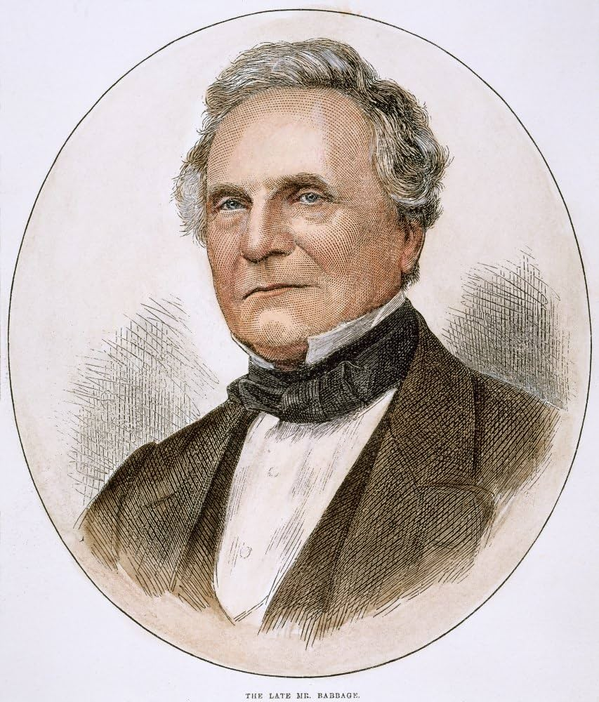

Introduction
Charles Babbage (1791-1871) was an English mathematician, philosopher, inventor, and mechanical engineer who is best known for conceptualizing the first automatic mechanical computer, the Analytical Engine, which is considered the precursor to the modern computer.
Contributions to Computer Science
Babbage is often referred to as the "father of the computer" for his design of the Analytical Engine. The device featured the core components of a modern computer, such as a central processing unit (CPU) memory, and a data input/output mechanism. Though never completed in his lifetime, his ideas were a crucial foundation for the development of computers.
In addition, he also designed the Difference Engine, an automatic mechanical calculator to tabulate polynomial functions, which is seen as a key step toward the idea of programmability.
Charles Babbage's History
Charles Babbage was born in London on December 26, 1791. As a child, he was known for his sharp mind and curiosity. He attended Cambridge University, where he was introduced to mathematics and computing, laying the groundwork for his later inventions.
Babbage was a brilliant but somewhat eccentric character. Though he faced many challenges in his life, including a lack of funding and skepticism from contemporaries, his ideas left an indelible mark on the future of technology and are still studied in the field of computer science today.
Quote from Charles Babbage
"On two occasions I have been asked [by members of my family] to name the most memorable moment in my life. I replied that the most important moment was when I was sitting in my study at the age of 30 and the idea of the [Analytical] Engine first struck me."